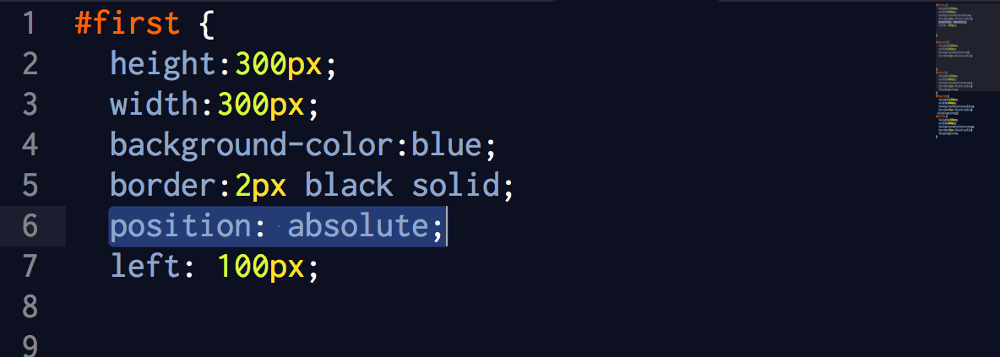
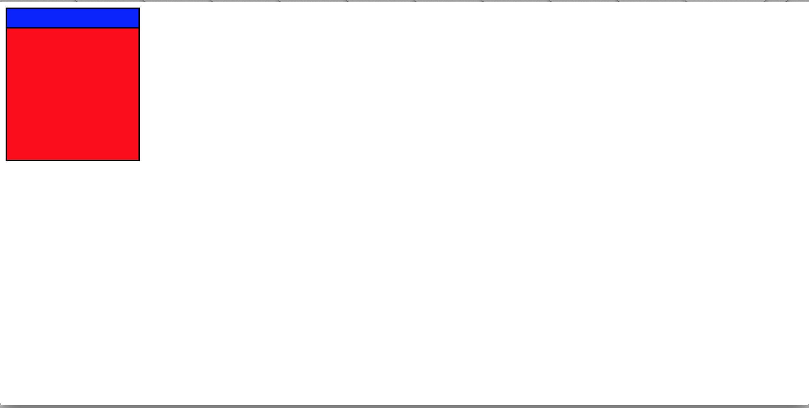

Before we can begin talking about HTML and CSS we have to give a couple definitions and have a couple assumptions. The first assumption is that the reader knows what HTML and CSS are and what they are used to do. That being said I will define just two terms and hopefully the rest of the article will be understandable as an outgrowth from these two terms. The first is element. Elements in HTML will be anything that is on the screen. It may be a word or a colored square or an image. The second is property. An element has properties. These determine it's size, shape and position. We will of course be focussing on the position properties of and element.
Having control of the position of elements on the screen is one of the more difficult abilities for a progammer of HTML to obtain. The reason for this I believe is twofold. First, elements by default have properties and shapes that are not necessarilly the properties and shapes that at first glance you believe, or want them to have. There is a tendency to guess these default sizes and properties because they are not explicitly stated. Secondly, the interactions between elements is complex and can be difficult to keep in your head. This can lead to a difference between what happens on the page and what was expected. The difference between actual outcome and expected outcome in both of these aspects leads to confusion.
What I believe to be the best way to control the position of elements on the screen is to create a fluid positioning system that is easily manipulated or, even better, manipulates itself as the website changes. Of course, I'm just guessing and this may not be the case in actual web design.
On to positioning: The three terms I will explain are absolute, relative and fixed.
Absolute
Absolute is a properties that is entered into CSS like this. When an element is in position: absolute it is positioned on the screen relative to a "parent" that is not in static position. Now there is some new terminology here that we should go over. Static position is the default position of an element. It is where an element falls when your computer reads and html and determines where things are to be put according to the code. IF nothing is specified elements are by default placed one on top of the other. Here is a picture of a static position of two blocks. One on top of the other determined by what code came first in the program.
The other term is parent. The parent of an element code written above the element. The element is nested inside other elements. The first element up is the parent. In absolute positioning the parent is any other element that has it's position specified as either absolute itself or relative. Once the original element finds its parent then it can be positioned relative to that parent using the terms top:, bottom:, left:, and right:.n If there is no parent element these terms are used relative to the whole screen. Here is an example of a red block whose parent is the blue box and that was positioned 50 pixels from the top of its parent.
The next position term is relative. Positioning an element relative means that it is relative to its static or default position. So if there is no designation of top: bottom: ect. it will land the same place as the default. But if there are pixels or percentages written in for say top:. The element will move that distance down from its original default position.
The final term is fixed. Fixed positioning place the element at a position relative to the viewport not in relation to the rest of the webpage. This positioning ensures that the element will always be visible on the screen even when the webpage is scrolled up or down.